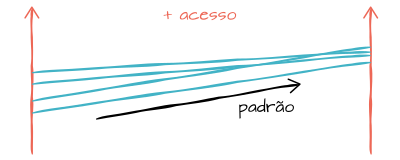

Estudantes acessam mais a internet...
Mais de 70% dos estudantes do país acessam a internet, uma porcentagem bem maior do que os pouco menos de 40% dos não-estudantes.
... e estudantes da rede privada acessam mais ainda
Entre os estudantes da rede privada, 19 entre 20 são internautas.
Quanto mais estudo, mais uso de internet
Observando o gráfico "Utilização da internet por grupo de anos de estudo" em valores relativos, podemos ver que quanto mais a pessoa estuda, mais ela está propensa a utilizar a internet.
O percentual de acesso é de aproximadamente 12% entre as pessoas com 4 anos ou menos de estudo, enquanto entre aqueles com mais de 15 anos de estudo esse percentual fica acima dos 90%.
Mas em números absolutos...
Ninguém chega perto dos usuários com 11 a 14 anos de estudo: são mais de 32 milhões de usuários.
É perceptível também a grande quantidade de pessoas que não acessam a internet entre aqueles com 10 anos ou menos de estudo. Para ações de inclusão digital, é válido levar em consideração este dado para se chegar em campanhas adequadas a estas pessoas com um baixo grau de instrução.
O acesso à internet nas regiões metropolitanas é um pouco maior
O padrão apresentado pelos gráficos em valores relativos indica uma pequena inclinação, que representa um aumento não muito grande no acesso nas regiões metropolitanas. Isso é algo bom, pois indica que pelo menos em questão de inclusão digital, não há muito contraste entre o estado e sua região metropolitana.
Maior área = maior inclinação?
Os dois estados contemplados com maior inclinação no gráfico relativo são os estados do Pará (Belém) e Bahia (Salvador). É válido observar que junto a Minas Gerais, eles são os estados com a maior dimensão, e talvez a dificuldade para oferecer uma infraestrutura adequada ao acesso à internet por toda sua extensão seja uma tarefa mais difícil do que em estados de dimensões menores.